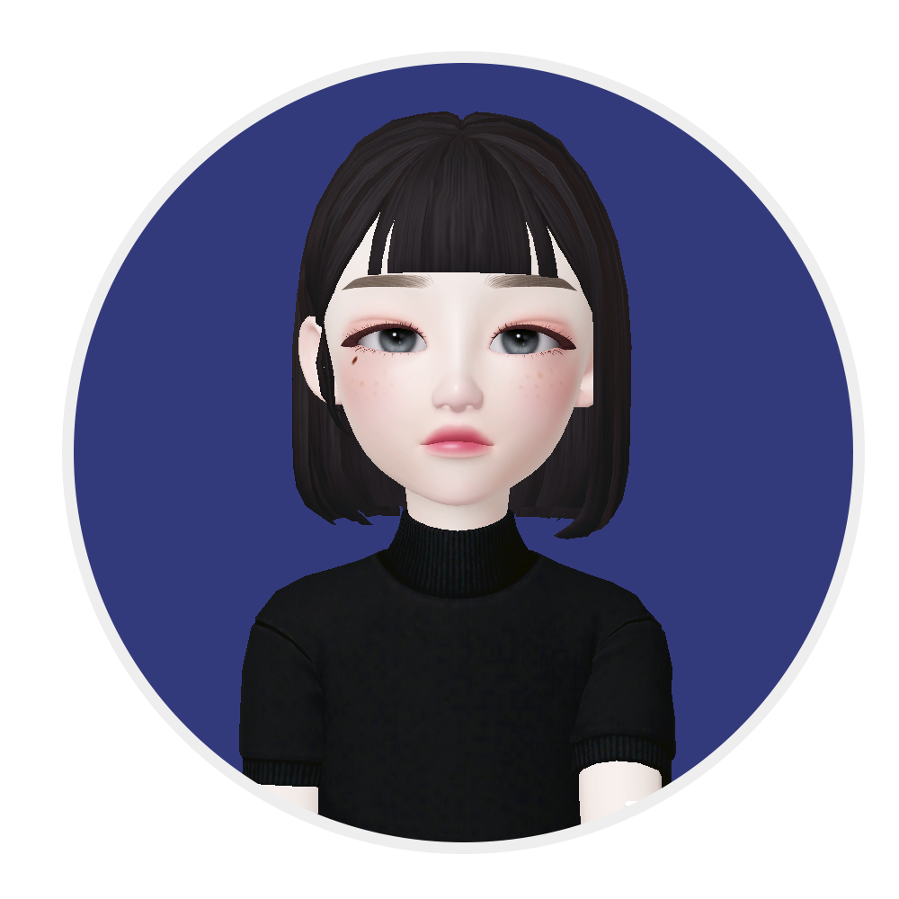
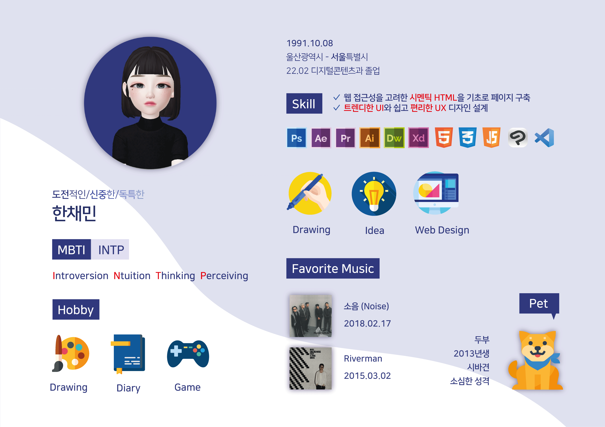
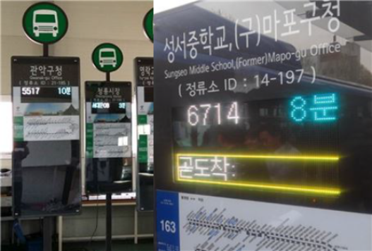

- ◼️ Name 한채민
- ◼️ Birth 1991. 10. 08
- ◼️ Address 서울특별시 강서구
- ◼️ Phone 010-7589-0420
- ◼️ Email stymest91@naver.com
로딩중
— 발전과 화합을 중시하는 웹퍼블리셔 한채민입니다.
— 감각적인 디자인에 대한 끝없는 탐구와 효율적인 시멘틱 웹사이트 구축을 지향합니다.
섬세하고 감각적인 디자인을 추구하며
새로운 변화를 빠르게 받아들이는 웹 퍼블리셔가 되는 것이 목표입니다.
가파르게 성장하는 디지털 콘텐츠의 변화에 따라 등장한 반응형 웹 페이지는 저에게 강력하고 새로운 영감을 주었고 취미로 만들던 웹 페이지를 동적으로 구현하고 싶은 욕심이 생겨 웹 퍼블리싱 공부를 시작했습니다.
탐구와 변화에 재미를 느끼는 사람이 되고자 합니다.
HTML5 & CSS3 페이지를 ZenCoding(EMMET)과 SCSS로 코딩할 수 있습니다.
남다른 시선으로 변화를 이끌고 방향을 제시하는 것을 추구하지만 다양한 의견을 수용하려는 자세를 가지려 노력합니다.
JS 플러그인 뿐만 아니라 필요한 기능은 직접 구현할 수 있는 Javascript · jQuery · React 로직구현이 가능합니다.
문제와 충돌했을 때 포기하지 않고 끊임없이 파고들어 해결책을 찾는 것이 저의 장점입니다.
배우는데 있어 포기 하지 않고 꾸준히 노력해 자신이 목표한 바를 이뤄내는 친구 혼자 노력하는 것이 아닌 주변의 친구들을 독려해서 함께 가는 친구 이 친구와 함께 한다면 아무리 어려운 일도 기분 좋게 완주할 수 있을 것 같은 친구 입니다.
실행력이 빠르고 맡은 바는 꼭 이루고야 마는 부분이 닮고 싶은 친구입니다. 가끔 어른스럽고 섬세한 부분이 있는데 그런 의외의 점이 장점으로 발휘되는 친구입니다.
함께 있는 시간이 즐겁고 편한 친구. 재미있는 농담으로 분위기를 밝게 환기시켜주는 재주가 있는 좋은 친구입니다.

UX의 정의에 대해서 알아보고, 다양한 UX의 사례들, 특히나 성공적인 UX라 불리는 사례들을 보면서
사용자 경험을 바탕으로 어떤 제품이나 서비스를 구축하는 것의 중요성을 깨달았다.
내가 생각하는 UX란, 사용자가 원하는 기능을 사용할 때 사용자가 불편함을 느끼지 않고 사용할 수 있도록 하고,
원하는 활동을 편리하게 제품이나 서비스를 이용하여 할 수 있도록 하는 것이라는 생각이 들었다.
사전적인 의미에서 UX란 사람의 여러 감각과 감정의 총합을 뜻하는데, 내가 생각하는 UX는 ‘불편함’이라는,
혹은 다르게 불릴 수도 있는 부정적인 감정을 최소화시키는 것이라는 생각이 든다.

‘스타일을 창조하여 그것을 섬세한 디자인으로 탈바꿈 시키고싶다’ 는 마음으로 매일 노력하고 있습니다.
HTML5 & CSS3 시멘틱 페이지를 SCSS, ZenCoding(EMMET)으로 작성할 수 있습니다.
클라이언트의 요구사항을 적극적으로 반영하는 UI/UX 디자인 능력은 저의 최고의 장점중 하나입니다.
JS 플러그인을 사용에 그치지 않고 필요한 기능을 직접 구현할 수 있는 Javascript/jQuery 로직구현이 가능합니다.
새로운 코딩기법과 디자인을 배우는 것이 정말 즐겁습니다.
페이지 전체의 계층구조를 입체적으로 분석할 수 있는
실무형 코딩기법 Emmet을 사용할 수 있어 업무시간을 단축시킬 수 있을뿐 아니라,
유지보수도 더욱 쉽고 정확하게 처리할 수 있습니다.
SCSS의 가장 큰 장점인 변수와 Mixin 기능을 적극 활용하여
CSS 스타일링을 할 수 있습니다.
Sprite-Image와 IR(Image Replacement)기법에 능숙
id, class를 남발하지 않고 원하는 요소를 셀렉팅할 수 있는 능력,
CSS3 Transform, Transition, Keyframes을 이용한 애니메이션 효과 구현
슬라이드 구현에 적합한 ul,li,a 태그와 flxe를 사용하여 UI를 구현하였습니다.
또한 자바스크립트로 position의 lef값을 동적으로 변화시켜 이동하도록 하였습니다.
플러그인 없이 직접 구현하였습니다.

이전, 다음 기능을 가진 업그레이드 된 슬라이드로서 사용자 편의성을 향상되었습니다. 제이쿼리의 fadeIn(), fadeOut() API를 이용하여 코드를 구현하였습니다. 플러그인 없이 직접 구현하였습니다.
슬라이드 보기시작, 정지기능이 장착된 슬라이드로서 일관성있게 한쪽 방향에서 다음 슬라이드가 노출되는 기능을 append() API와 콜백함수의 개념을 접목하여 구현하였습니다. 플러그인 없이 직접 구현하였습니다.
슬라이드 보기
저의 웹퍼블리싱 이야기 입니다.
질문을 선택하시면 정리된 답변을 보실수 있습니다.
더욱 궁금하신 점은 면접시 말씀드리겠습니다. 감사합니다!
본 페이지는 저의 개인 포트폴리오용으로 제작되었으며, 상업적인 목적과 관련이 없음을 알려드립니다.